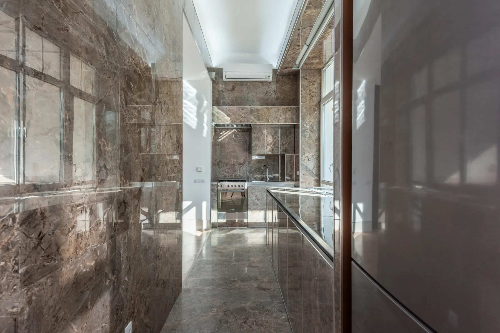
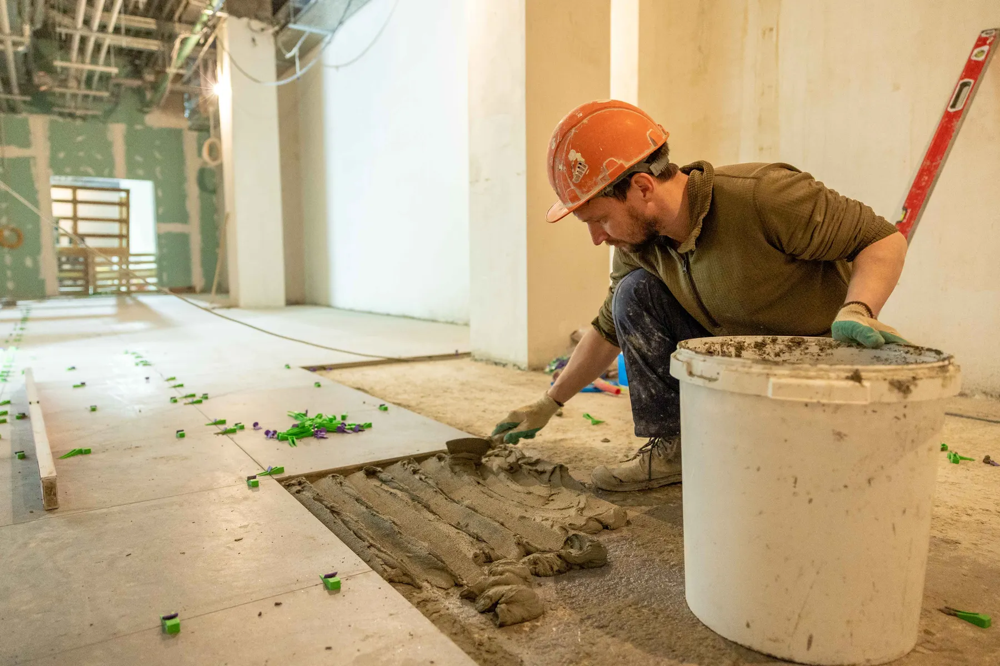
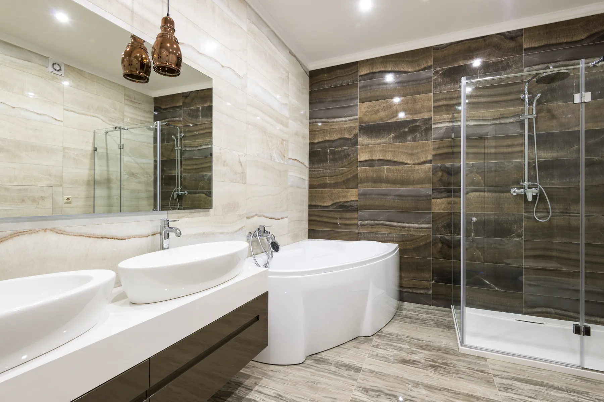
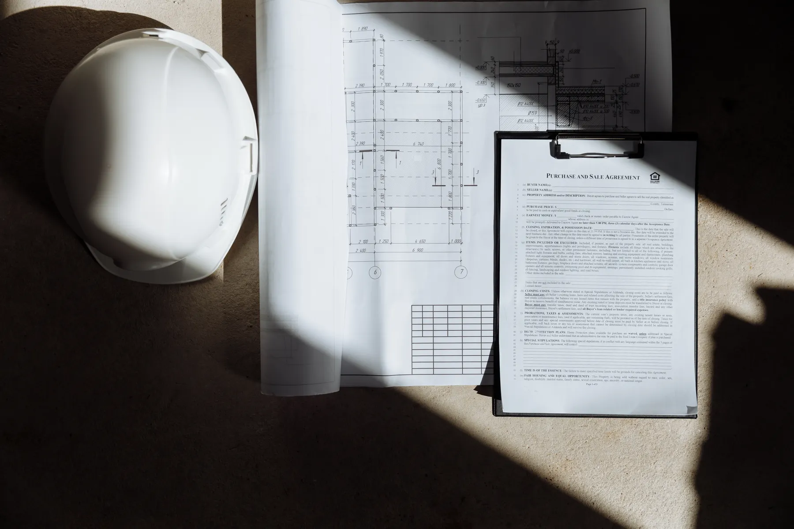

Reforma
residencial
Converse sobre a necessidade da sua casa, o ambiente envolvido e as mudanças desejadas. Consulte como a WB pode atender.
Consultar reformaReforma residencial.
Olhar para os detalhes.




WB Reforma e Acabamentos. Conte o que deseja mudar em casa e consulte o atendimento para sua reforma residencial.
Conversar com a WBFotografias ilustrativas de banco. Não representam a equipe ou obras realizadas pela WB.
Toda mudança começa pelo que você precisa.
A WB Reforma e Acabamentos atua no segmento de reforma residencial. Este é um espaço para apresentar sua necessidade, conversar sobre o ambiente e consultar os serviços disponíveis.
Um ambiente a renovar ou um acabamento que merece atenção: comece contando sua ideia.
Apresentar minha ideiaApresente o que pretende mudar. A WB confirma os serviços disponíveis, o escopo do atendimento e as condições para seguir com sua consulta.
Converse sobre a necessidade da sua casa, o ambiente envolvido e as mudanças desejadas. Consulte como a WB pode atender.
Consultar reformaApresente o detalhe ou a superfície que deseja renovar. Consulte os tipos de acabamento e serviços disponíveis para o seu caso.
Consultar acabamentosDescreva o ambiente e envie suas dúvidas no contato. A WB informa como funciona a avaliação e o que é necessário para consultar valores.
Consultar condiçõesQual ambiente? O que precisa mudar? Você já tem referências? Organizar essas informações ajuda a explicar o que procura.
Preparar meu contatoMateriais, superfícies e composições para começar a conversa. Galeria ilustrativa de banco, sem apresentar estes ambientes como obras da WB.
Uma referência visual de superfícies na cozinha.
Materiais claros e escuros em um mesmo ambiente.
Um registro ilustrativo do universo da reforma.
Escolha um assunto e conte qual ambiente precisa de atenção. A mensagem fica pronta para você revisar e enviar no WhatsApp.
(49) 99142-6682Consulte agenda, região de atendimento e condições diretamente com a WB.
Você revisa e envia a mensagem no WhatsApp. A WB confirma serviços, disponibilidade e valores.
Informações para organizar seu primeiro contato com a WB Reforma e Acabamentos.
Pelo WhatsApp ou ligação para (49) 99142-6682. O contato desta página prepara uma mensagem com o assunto e o ambiente que você informar.
Qual ambiente deseja renovar, o que precisa mudar e em qual cidade fica o imóvel. Se tiver fotos e referências, você pode compartilhá-las durante a conversa no WhatsApp.
Entre em contato sobre reforma residencial e acabamentos. A WB confirma os serviços disponíveis e o atendimento para sua necessidade.
Apresente sua ideia e pergunte quais informações são necessárias. A WB confirma as condições de avaliação e orçamento, incluindo eventual necessidade de visita.
O perfil comercial informa aberta 24 horas. Confirme diretamente com a WB a disponibilidade e os horários para conversar ou combinar atendimento.
Informe a cidade e o bairro do imóvel pelo WhatsApp para consultar cobertura. A região e o endereço serão incluídos aqui quando confirmados.
Uma conversa para começar a mudança na sua casa.